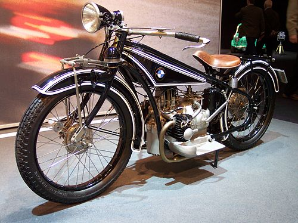

BMW Motorrad is the motorcycle brand and division of German automotive manufacturer, BMW. It has produced motorcycles since 1923, and achieved record sales for the fifth year in succession in 2015. With a total of 136,963 vehicles sold in 2015, BMW registered a growth of 10.9% in sales in comparison with 2014. In May 2011, the 2,000,000th motorcycle produced by BMW Motorrad was an R1200GS.
History
The company began as an aircraft engine manufacturer in the early 20th century and through World War I. BMW manufactured its first motorcycle in 1923, the R32, which featured a flat-twin boxer engine. BMW Motorrad still uses the flat-twin boxer configuration, but now manufactures motorcycles with a variety of engine configurations.

Current production
Most BMW Motorrad's motorcycle production takes place at its plant in Berlin, Germany. The G 310 and F 450 series are produced at TVS' plant in Hosur, Tamil Nadu, India, the C 400 series is produced at Loncin's plant in Chongqing, China, while the plants in Manaus, Brazil and Rayong, Thailand produce a variety of models for the local markets. Some engines are manufactured in Austria, China, and Taiwan. Most of the current motorcycles in BMW Motorrad's range were designed by David Robb, who was the company's chief designer from 1993 to 2012 when he was replaced by Edgar Heinrich.
The most popular model is the R1300GS and its sibling R1300GS Adventure. Current production includes a variety of shaft and chain driven models, with engines from 310 cc to 1,802 cc; and models designed for off-road, dual-purpose, sport, and touring activities.
In 2008, BMW introduced the DOHC Boxer HP2 Sport, and entered the serious off-road competition motorcycle market with the release of the BMW G450X motorcycle.
BMW Motorrad motorcycles are categorized into product families, and each family is assigned a different letter prefix. The current families are:
C series – maxi-scooters called Urban Mobility Vehicles by BMW. Models are CE04, CE02, C400GT, C400X, C1 and C Evolution.
F series – parallel-twin engines of 420-895 cc capacity featuring chain drive. Models are F450GS, F750GS, F800GS, F900GS Adventure, F850GS, F850GS Adventure, F900R, F900GS, F900XR.
G series – single-cylinder engine of 313 cc capacity featuring chain drive. Models are G310R, G310GS, and G310RR, all manufactured in India by TVS Motor Company.
R series – primarily twin-cylinder boxer engines of 1,254 cc and 1,300 cc capacity featuring liquid cooling and shaft drive. The models are R1300GS, R1300GS Adventure, R1300R, R1300RS, R1300RT. This family also includes the R 12, R 12 NineT, R 12 S, and R 12 G/S, which use the previous generation air and oil-cooled boxer engine, and the R18, which uses a newly designed air and oil-cooled 1,802 cc boxer engine.
K series – straight-six engine of 1,649 cc capacity featuring shaft drive. The models are K1600B, K1600 Grand America, K1600GT, and K1600GTL.
S series – performance-oriented inline-four engine of 999 cc capacity featuring chain drive. The models are S1000RR, S1000R, and S1000XR.